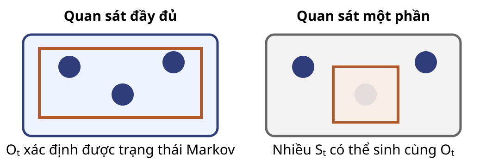
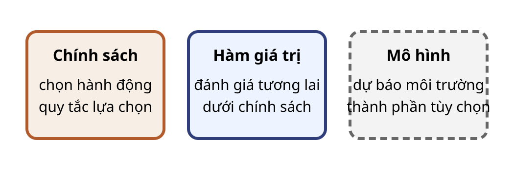
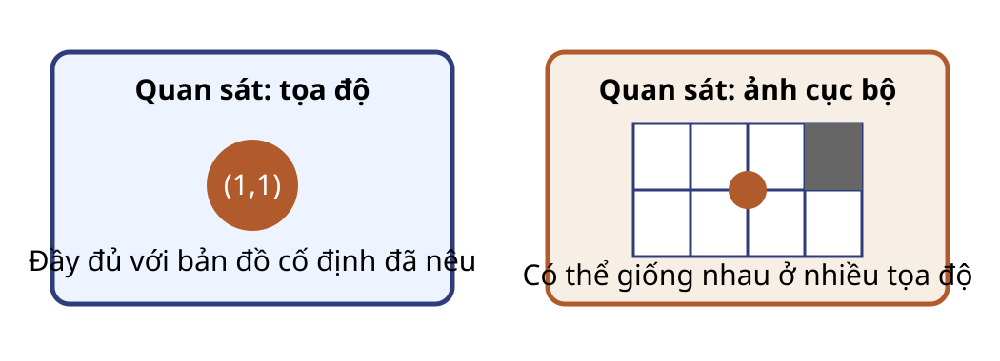

Câu hỏi: trong ví dụ xe, trạng thái chỉ có vị trí hay cặp vị trí–vận tốc phù hợp hơn với điều kiện này?
Quan sát đầy đủ

Quan sát đầy đủ nghĩa là tác tử nhận đủ thông tin để xác định một trạng thái Markov.
Quan sát đầy đủ chưa đủ để định nghĩa một MDP; còn cần tập hành động, động lực chuyển, phần thưởng và quy ước kết thúc hoặc chiết khấu.
Quan sát một phần
Trong quá trình quyết định Markov quan sát một phần (POMDP), môi trường có trạng thái Markov $S_t$ nhưng tác tử chỉ nhận $O_t$ do cơ chế quan sát sinh ra.
Nhập nhằng
Nhiều trạng thái có thể sinh cùng một quan sát.
Hệ quả
Chính sách chỉ dựa vào $O_t$ có thể chọn giống nhau trong hai tình huống cần hành động khác.
Khôi phục thông tin cho quyết định
Lịch sử $H_t$
→
Biểu diễn $X_t=f(H_t)$
→
Chính sách $\pi(a\mid X_t)$
Có thể dùng một cửa sổ quan sát, bộ nhớ hoặc trạng thái niềm tin.
Biểu diễn tốt phải giữ thông tin cần cho dự báo và quyết định.
Kiểm tra khả năng quan sát
Câu hỏi: trước khi kết luận “đầy đủ” hay “một phần”, hãy nêu quan sát mà tác tử nhận.
Tình huống
Quan sát cần làm rõ
Cờ vua
Toàn bàn cờ hay chỉ một vùng?
Trò chơi nhiều người
Trạng thái ẩn của đối thủ có lộ không?
Robot dọn nhà
Cảm biến, bản đồ và bộ nhớ nào có sẵn?
Ba vai trò của tác tử

Mô hình là tùy chọn; tác tử phi mô hình vẫn có thể học chính sách hoặc hàm giá trị.
Chính sách chọn hành động
Với biểu diễn quyết định $X_t=x\in\mathcal X$, đặt $\mathcal A(x)$ là tập hành động hợp lệ.
Câu hỏi: nếu phía Đông là tường và quy tắc là đứng yên, $S_{t+1}$ bằng bao nhiêu?
Giao diện quan sát đổi kết luận

Tính Markov thuộc biến trạng thái; khả năng quan sát thuộc dữ liệu tác tử nhận.
Phân loại có điều kiện
Câu hỏi: robot nhận ảnh phía trước nhưng không có bản đồ hay bộ nhớ. Hãy phân loại khả năng quan sát và nêu bằng chứng.
Hai vị trí khác nhau có thể cho ảnh giống nhau không?
Ảnh hiện tại có đủ dự báo va tường và đường đến đích không?
Lịch sử quan sát có thể bổ sung thông tin nào?
Từ giao diện đến quyết định
Quan sát $O_t$
→
Biểu diễn $X_t$
→
Chính sách $A_t$
→
Phản hồi $R_{t+1},O_{t+1}$
Hàm giá trị đánh giá tương lai dưới chính sách.
Mô hình tùy chọn dự báo phản hồi của môi trường.
Bài 03 đóng gói $\mathcal S,\mathcal A,p,\gamma$ thành MDP.
Tự kiểm tra và đọc tiếp
Viết một chuyển tiếp với đúng chỉ số $t$ và $t+1$.
Nêu ví dụ $S_t$, $O_t$ và $X_t$ khác nhau.
Phân biệt dự đoán với điều khiển bằng đại lượng được giữ cố định.
Mô tả một mê cung quan sát một phần.
Bài 03: chuỗi Markov → quá trình phần thưởng Markov → MDP → phương trình Bellman.
Bài tập từ tài liệu nguồn: nhấn ↓
Bài tập 1
Câu hỏi:
Trình bày sự khác nhau giữa học có giám sát, học không giám sát và học tăng cường. Vì sao tín hiệu trong học tăng cường được xem là “bị trễ”?
Bài tập 2
Câu hỏi:
Xét bài toán mê cung hình lưới và nhiệm vụ là tìm kiếm đường ra. Hãy mô tả rõ tập trạng thái, tập hành động, phần thưởng và trạng thái kết thúc để mô hình hóa bài toán dưới dạng tương tác giữa tác tử và môi trường trong thiết lập môi trường quan sát được và môi trường quan sát được một phần.